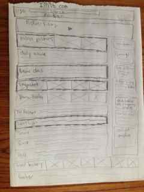
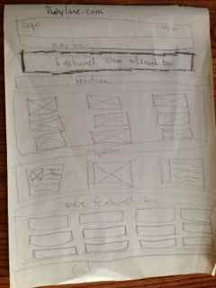

The IMDb website is a database for accessing information on the entertainment industry specifically Movies and TV and the people who make it work.
There are many visual challenges to this site, it has a LOT of information, which updates daily, as well as advertising. I think the page is very well designed as most of the images and a lot of the text are links to more information. Since the information updates so often it is important that the layout remain fixed.
The Ruby Lane site is an ecommerce site for antiques and art. The site needs to showcase the items for sale.
The most pressing challenge for any ecommerce site is to make the site visually appealing while showcasing the items for sale. The main focus needs to be on the items which change and/or rotate often and maybe different sizes even though the layout is fixed.
The Etsy site is an ecommerce site for handmade items. The site needs to showcase the items for sale.
The most pressing challenge for any ecommerce site is to make the site visually appealing while showcasing the items for sale. The main focus needs to be on the items which change and/or rotate often and maybe different sizes even though the layout is fixed.